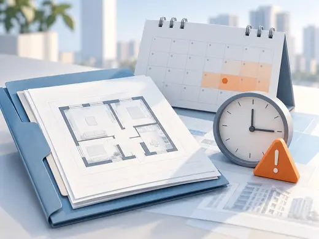
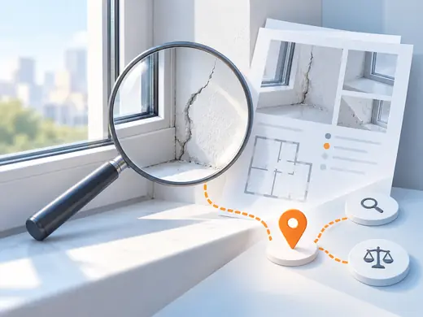
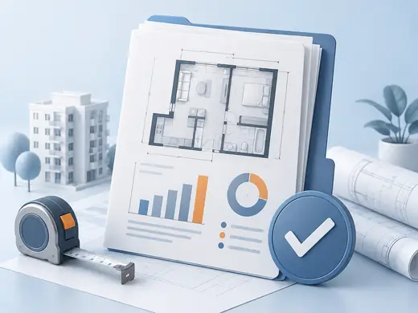
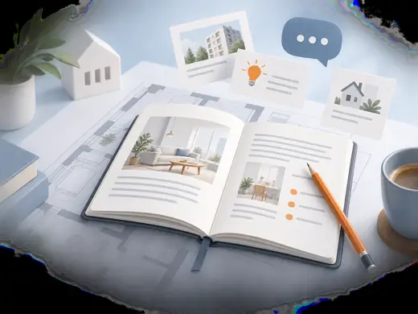
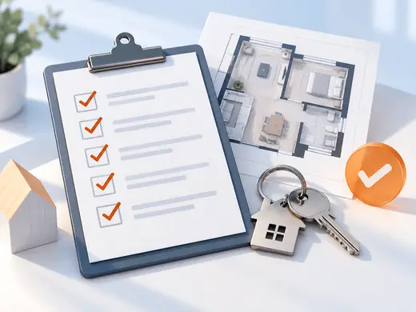
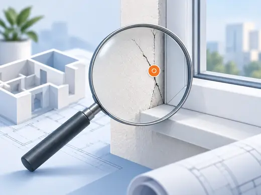

Автор материала
Формулирует вопрос, объясняет контекст и отделяет факт от предположения.


От ДДУ и сроков передачи до приёмки, дефектов, экспертизы и споров с застройщиком. Выберите ситуацию или найдите конкретный ответ — база подскажет, что проверить и какой следующий шаг возможен.
Не нужно читать всю базу подряд. Начните с текущей точки: до ключей, перед приёмкой, после обнаружения недостатков или перед спором с застройщиком.
Проверьте срок передачи по ДДУ и документы, которые пригодятся дальше.
Открыть маршрут
Срок передачиСверьте дату в ДДУ и соберите исходные документы для предварительной оценки ситуации.
Разобраться со сроком Перед встречейПроверьте дату, порядок допуска и подготовку к осмотру квартиры.
Подготовиться к приёмке
После осмотраРазберитесь, что зафиксировать на месте и когда нужен следующий этап.
Изучить дефекты
Замечания остаютсяПоймите, какие материалы собрать перед повторной приёмкой или спором.
Посмотреть маршрут ДокументыВыберите, какой результат нужен для банка, приёмки или следующего шага.
Найти нужную услугу Другой форматПроверьте, как устроен дистанционный формат и что нужно подготовить.
Узнать о дистанционном форматеОткройте нужный кластер материалов. Внутри будут короткий ответ, подробный разбор, документы и понятный следующий шаг.

01Срок передачи, документы, приглашение и действия при задержке.
Перейти к кластеру
02Подготовка, осмотр, акт, замечания, повторная и дистанционная приёмка.
Перейти к кластеру
03Как зафиксировать дефекты и понять, когда нужен технический разбор.
Перейти к кластеру 04Неустойка за срок передачи, компенсация за недостатки и доказательства.
Перейти к кластеруСначала определите задачу, затем сравните формат и результат. В каталоге только услуги, которые действительно помогают пройти конкретный этап.
Проверка состояния квартиры и фиксация замечаний.
130 ₽/м², минимум 6 900 ₽ПодробнееФормат для ситуации, когда собственник не может приехать.
20 000 ₽ + базовая приёмкаПодробнееПроверка, устранены ли замечания после первой встречи.
100 ₽/м², минимум 5 500 ₽ПодробнееОтдельный документ для банковской сделки и ипотеки.
4 900 ₽ПодробнееДополнительная проверка зон теплопотерь и монтажа.
от 1 500 ₽ПодробнееТехнический разбор причин и объёма строительных недостатков.
от 20 000 ₽ПодробнееИнструментальная оценка основания перед укладкой покрытия.
2 000 ₽ПодробнееПлан квартиры с разметкой инженерных и электрических сетей.
от 7 900 ₽ПодробнееПроверка документов и маршрута по задержке передачи квартиры.
Условия — после анализа документовПодробнееПравовая оценка ситуации после фиксации и экспертизы.
Условия — после анализа ситуацииПодробнееЗдесь не FAQ с очевидными формальностями, а входы в самые частые практические запросы. Если вопрос важный, переходите в соответствующий кластер и проверяйте детали.
Сначала найдите в договоре условие о сроке передачи и сопоставьте его с документами по объекту.
Читать разбор Срок прошёлЗафиксируйте дату, соберите ДДУ и переписку, затем оцените доступный маршрут по документам.
Читать разбор ПодготовкаПодготовьте ДДУ, документы и список вопросов, чтобы на встрече сосредоточиться на состоянии квартиры.
Читать разбор На встречеСначала осмотрите объект и зафиксируйте замечания; последствия каждого документа нужно понимать до подписи.
Читать разбор НедостаткиКогда важно установить причины, объём нарушений или стоимость устранения, одной фиксации замечаний может быть мало.
Читать разбор Другой форматДа, для этого нужно заранее проверить формат допуска, документы и порядок взаимодействия с представителем.
Читать разбор Юридическая оценкаИтог зависит от документов, периода, обстоятельств дела и актуальных правовых условий — их нужно проверить отдельно.
Читать разбор СпорСоберите акт, фото, переписку и документы по объекту; следующий шаг зависит от характера недостатков и доказательств.
Читать разборПримеры актов, технических выводов и судебных решений помогают понять, какой результат даёт каждый этап. Публиковать будем только проверенные материалы.
Для юридических и технических материалов рядом должны быть автор, проверяющий, дата обновления и источники. Это часть доверия к базе, а не служебная деталь.
Формулирует вопрос, объясняет контекст и отделяет факт от предположения.
Проверяет материалы о дефектах, обследованиях, измерениях и результатах приёмки.
Проверяет правовые формулировки, документы и ограничения обещаний.
Лента будет показывать только опубликованные и проверенные материалы. Пока используйте навигацию по этапам и сценариям — так проще попасть в нужную тему.
Начните с ДДУ, сроков передачи, приглашения на приёмку, дефектов и экспертизы.
Коротко опишите ситуацию. Подскажем, с чего начать: с проверки документов, приёмки, экспертизы или юридической оценки.